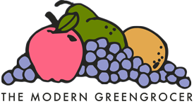

<mat-toolbar class="fixed-header mat-elevation-z5">
    <span>
        <a href="/">   
            
        </a>
    </span>
    <button mat-icon-button (click)="drawer.toggle()"><mat-icon>menu</mat-icon></button>
    <span>GreenGrocer</span>
    <span class="example-spacer"></span>
    <button mat-icon-button class="example-icon favorite-icon" aria-label="Example icon-button with heart icon">
      <mat-icon>favorite</mat-icon>
    </button>
    <button mat-icon-button class="example-icon" aria-label="Example icon-button with share icon">
      <mat-icon>share</mat-icon>
    </button>
</mat-toolbar>